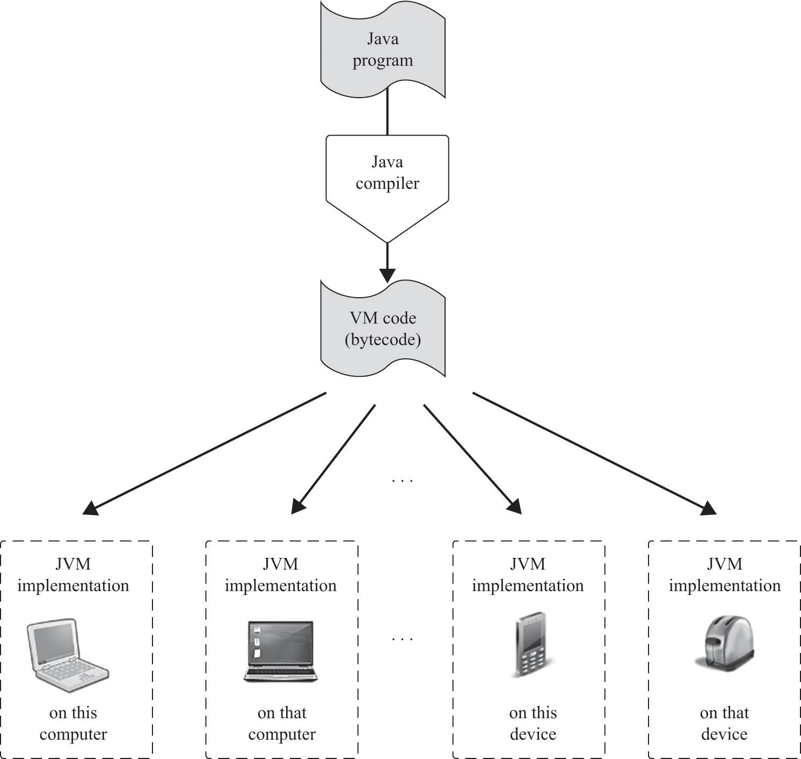
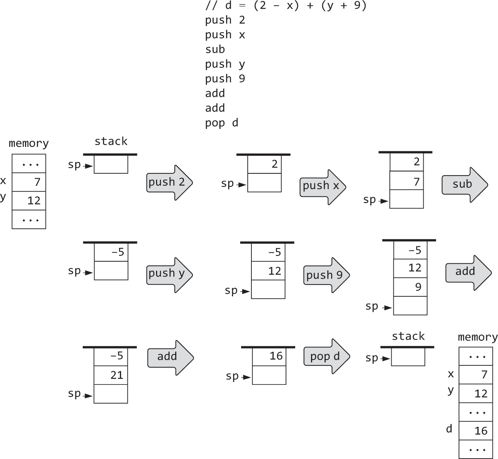

6.1 Stack Machines & Arithmetic
- The ultimate goal is to be able to write high level code in Jack, use a compiler to compile it into bytecode, which is then translated into assembly code and then finally assembled into machine code, to be executed by the hardware.
- This two tier compilation model allows for cross platform compatibility, because we run the bytecode on a virtual machine which can then be translated according to the machine it's running on

The Virtual Machine Paradigm
- High level code must be translated into machine code before it can run
- We break this down into two stages
- High level code is parsed and translated into intermediate steps
- The intermediate steps are translated further into low level machine code of the target hardware
- This allows us to keep a single high level compiler for a language, and implement virtual machines for different hardware sets to translate intermediate code
- This first program, called the compiler, translates high level code into intermediate VM commands
- The second program, called the VM translator, translates the VM commands further into the machine instructions of the target hardware platform

- The benefit with this model, is it allows developers to write code once, and execute it anywhere, even on new devices that don't exist yet
- The cost with this is reduced efficiency - verbose machine code as a result of multiple compilations
Stack Machine
- Effective VM languages strike a balance between high and low level syntax
- Should have reasonable expressive power - arithmetic logical commands, push / pop commands, function commands
- Commands should also be low such that the machine code is tight and efficient
- To achieve this conflicting result, we use a stack machine
Push / Pop
- Centrepiece of the stack machine is the [[docs/Computer Science/Algorithms and Data Structures/Notes/8.1 Stacks|Stack]]… duh
- A sequential storage space that grows and shrinks as needed
- Supports two commands -
push, pop
- Push:
- Adds a value to the top of the stack (like adding a plate to a stack of plates)
- Pop:
- Removes the stack's top value; the value that was just before it becomes the top of the stack
- We can say that stacks are Last In, First Out
- The popped value is always the last one that was pushed into the stack

- We can see that memory access is different in RAM vs the Stack
- The stack is only accessible from the top, whereas any RAM address can be accessed from anywhere
- Reading a value from the stack is lossy - Only the top value can be read, and only by popping it (though some stacks do allow you to read without removal, called
peek). Reading from RAM has no affect on the state of memory - Writing to the stack entails adding a value to the top without updating other values, whereas writing in RAM is lossy by overriding a location's previous state
Stack Arithmetic
- Consider the operation
x op y, whereopis just some operator applied to x and y -add, subtract, etc - In a stack machine, these operations are carried out as follows:
- Operands
x and yare popped off the stack x op yis computed- Result of operation is pushed onto the stack
- Same can be done with unary operations
op xfor single values
- Operands
Example - Addition and Negation on the Stack
Advanced Examples



- Looking at these, we can see that any high level complicated expression can be reduced down into a single value using a stack machine
Virtual Memory Segments
- Don't use symbolic variables like
x, y, sum, etcbut variables are represented as entries in VM segments that have names likestatic, this, local, etc- First, second third static variables become
static 0, static 1, etc - Something like
let x=ybecomespush this 3, pop local 1
- First, second third static variables become

- Rest of segments covered later
Virtual Machine Specification
- Stack based, operations take their operands from, and store their results on the stack
- 1 data type - 16 bit signed integer
- A VM program is a sequence of commands:
push / pop- Transfer data between the stack and memory segments
Arithmetic-Logical- Perform arithmetic and logical operations
Branching- Facilitate conditional and unconditional branching operations
Function- Facilitate function call and return operations
Push / Pop Commands

Arithmetic-Logical Commands
- Arithmetic commands:
add,sub,neg - Comparison commands:
eq,gt,lt - Logical commands:
and,or,not - All require two operands
- Pop two values off the stack, computes the stated function with values, pushes result back onto the stack

Examples


Implementation
- Use a VM translator to convert VM commands into machine language
- Using a stack and virtual memory segments
- Translate each VM command into a sequence of low level instructions
- Von Neumann example
- Represent VM stack using a designated memory block in the host RAM
- Lower end of the block will be a fixed base address
- Higher end will change as the stack grows and shrinks
- We can manage the stack by keeping track of a stack pointer, which holds the address of the RAM entry after the top most value of the stack
- This value will initially be
stackBasewhich is the bottom of the stack
- This value will initially be
push xcan be implemented viaRAM[SP] = x, followed bySP++to increment the stack pointerpop xcan be implemented viaSP--, followed byx = RAM[SP]
- Hack Example
- Set stack base at address 256 in Hack RAM
SP=256via@256, D=A. @SP, M=D
- The VM translator can then handle each push and pop command by generating assembly that realises
RAM[SP++] = xorx = RAM[SP--]
- Set stack base at address 256 in Hack RAM
VM Mapping on the Hack Platform
- VM Program is a sequence of commands stored in a text file named
FileName.vm- First letter must be uppercase
- Each line is a separate VM command, to be translated into one or more instructions in assembly code
- VM abstraction has only data type that can be expressed as:
- Two's complement 16 bit value - i.e. A signed integer
- VM Boolean true / false are represented as
-1 and 0respectively - Pointer (memory address)
- Hack RAM consists of 32K 16bit words

- Recall our predefined symbols used in assemblers:

- For now, assume these have been already initialised to suitable addresses in RAM
- Their addresses aren't important to the VM anyway
-
Suppose we want to storage the D register on the stack:
RAM[SP++] = D- This can be realised in assembly using:
@SP, A=M, M=D, M=M+1
- This can be realised in assembly using:
-
@SP: This is loading the address of theSPregister. A=M: Once the address inSPhas been loaded, this sets theAregister to whatever value is in memory at the address held inSP. Essentially,Anow holds the address of the top of the stack.M=D: This assigns the value in theDregister to the RAM location pointed to by theAregister. Given the previous step, this effectively stores the value inDat the top of the stack.M=M+1: This increments the value at the RAM location pointed to by theAregister.
Mapping Memory Segments
- Base address of segments
local, argument, this, thatare stored in registersLCL, ARG, THIS, THATrespectively- Any access to the
nthvalue of a virtual segmentpush / pop segmentName nis translated into assembly that accesses addressbase+n, wherebaseis a pointer toLCL, ARG, THIS, or THAT
- Any access to the
- Pointer segment contains two values, mapped to registers 3 and 4
THIS and THAT- Access to
pointer 0 or 1is done by accessing theTHIS or THATpointer pop pointer 0setsTHISto the popped valuepush pointer 1should push onto the stack the current value ofTHAT
- Access to
- Temp - 8 word segment mapped to registers 5-12
- Any access to
temp iwhereivaries from 0 - 7 is translated into assembly code that accesses RAM at locations5 + i
- Any access to
- Constant - doesn't occupy any ram space, just supplies the constant
ipush constant 17will translate in assembly to pushing the value of 17 onto the stack
- Static - mapped to addresses 16-255 (maximum of 240 static variables)
- Each reference to
static iare the variables created in VM code push constant 100, push constant 200, pop static 5, pop static 2causesstatic 5 and static 2to be mapped on RAM addresses 16 and 17 respectively
- Each reference to
- Stack begins at address 256


[RAM of Hack Computer]
+---------------------+ <-- Highest memory address
| |
| Unused/Heap |
| |
+---------------------+
| Stack Frame #n |
| (Local vars, |
| Return addr, |
| Args, etc.) |
+---------------------+
| Stack Frame #n-1 |
| (Local vars, |
| Return addr, |
| Args, etc.) |
+---------------------+
| ... |
+---------------------+
| Stack Frame #2 |
| (Local vars, |
| Return addr, |
| Args, etc.) |
+---------------------+
| Stack Frame #1 |
| (Local vars, |
| Return addr, |
| Args, etc.) |
+---------------------+ <-- SP (Stack Pointer)
| |
| STACK AREA |
| |
+---------------------+
| Static vars |
| of other classes |
| ... |
+---------------------+ <-- Static vars of current class (address 16)
| General-Purpose|
| Registers (3) |
| (13, 14, 15) |
+---------------------+
| Temp (8) |
| (5 to 12) |
+---------------------+
| Pointer (2) |
| THIS and THAT |
| (3 and 4) |
+---------------------+
| THAT | <-- (address 4)
+---------------------+
| THIS | <-- (address 3)
+---------------------+
| ARG | <-- (address 2)
+---------------------+
| LCL | <-- (address 1)
+---------------------+
| SP | <-- (address 0)
+---------------------+ <-- Lowest memory address
Explanation:
-
SP (Stack Pointer): Points to the top of the stack. As functions are called or values pushed, it moves upwards. On return or pop operations, it moves downwards.
-
LCL and ARG: Base pointers for the
localandargumentsegments of the currently executing function. -
THIS and THAT: General purpose pointers, often used for the current object and array operations.
-
Temp Segment: Fixed space for temporary storage.
-
General-Purpose Registers: Additional storage, not strictly defined by the VM, but available for use.
-
Static Segment: Holds static variables, which retain their values across function calls within the same class. Each class has its unique space in this segment.
-
Stack Area: Where the magic happens! Function calls create a new frame containing local variables, return addresses, and function arguments. Each function has its frame, and they are pushed onto and popped off the stack in a LIFO (Last In, First Out) manner.
Examples
- ``
@sp // get address of stack pointer
AM = M+1
// Increment the SP to make room for the new value. The SP always points to the next available address in the stack.
A = A-1 // After incrementing, we go back to the address where we actually want to store our new value.
M = 1 // Set the value of this address to 1 (pushing the constant onto the stack).
When you see the combined operation AM, the order of operations is:
- The
Aregister is set to the value ofM+1. - The memory location pointed to by the
Aregister (which is nowM+1) gets the valueM+1.
Let's break it down for clarity:
A=M+1: The address registerAis set to whatever valueMcurrently holds plus one.-
M=M+1: The memory location at the address stored in theAregister (which has just been set toM+1) is then updated to hold the valueM+1.
@sp // Get address of stack pointer
AM = M-1 // Decrement the stack pointer by 1 to point to the top-most value on the stack (since we are popping it off)
D=M // Store the value from the top of the stack inside the D register
@Bob.7 // Address the 7th static variable in the Bob.vm file
M=D // Set the value of static 7 (Bob.7) to be the value previously stored in the D register

@5 // A=5: load the constant 5 into the A register
D=A // D=5: store the constant 5 in the D register
@SP // get address of the stack pointer
A=M // go to the top of the stack
M=D // place the constant 5 on the top of the stack
@SP // get address of the stack pointer again
M=M+1 // increment the stack pointer
@SP // get address of the stack pointer
AM=M-1 // decrement the stack pointer and go to the top value
D=M // pop the top value into D register
A=A-1 // go to the next value on the stack
M=D+M // add the value in D to the value at the top of the stack and store result
@SP // get address of the stack pointer
AM=M-1 // decrement the stack pointer and go to the top value
D=M // pop the top value into D register
@LCL // get base address of the local segment
A=M // go to the base address of the local segment
A=A+1 // increment to get to index 1
A=A+1 // increment again to get to index 2
M=D // store the popped value in local 2
@SP // Get address of the stack pointer
AM=M-1 // Decrement the stack pointer and go to the first value
D=M // Pop the top value into D register
A=A-1 // Go to the second value on the stack
D=M-D // Subtract: Set D = second value - first value
// We will use branching to determine if D is 0
@EQUAL // If D (result of subtraction) is 0, jump to EQUAL label
D;JEQ
// Code for "not equal" scenario
@SP // Get address of the stack pointer
A=M-1 // Point to the top of the stack
M=0 // Set the top of the stack to false (0)
@CONTINUE // Jump to the CONTINUE label to continue the program
0;JMP
(EQUAL) // EQUAL label
@SP // Get address of the stack pointer
A=M-1 // Point to the top of the stack
M=-1 // Set the top of the stack to true (-1)
(CONTINUE) // CONTINUE label (for continuing the program)
VM Examples
- Static table
| 0 | x | 3 |
|---|---|---|
| 1 | y | 7 |
| 2 | z | -18 |
VM Emulator
- A simple to way to implement a VM is to write a high level program representing a stack + memory segments and implement the BM commands using high level programming
- Stack can be represented using a large array and push, pop can be realised literally using high level statements like
RAM[SP++] = D - Combined with a GUI, this can be a good way to visualise how the stack works
Implementing a VM
- Uses three modules
- Parser - Make sense out of each VM command - understand what the command seeks to do
- CodeWriter - translate the understood VM command into assembly instruction
- Main program called
VMTranslator- Drives the translation process
Parser
- Handles the parsing of a single
.vmfile - Provides services for reading a VM command, unpacking the command into various components, providing convenient access to components
- Ignores all white space and comments
Example
- If the current command is
push local 2, then callingarg1() and arg2()would return, respectivelylocaland2 - If the current command is
add, then callingarg1() and arg2()would returnaddandarg2()would not be called
CodeWriter
- Translates a parsed VM command into assembly

Example
- Calling
writePushPop (C_PUSH, "local", 2) would result in generating assembly instructions that implement the VM commandpush local 2 - Calling
writeArithmetic("add")would result in generating assembly instructions that pop the two topmost elements from the stack, add them and push the result onto the stack
VM Translator
- Translator accepts a single command line argument
- Where
sourceis a file name of formProgName.vm - Drives the Parser and CodeWriter by looping through each line in the file and outputting assembly code